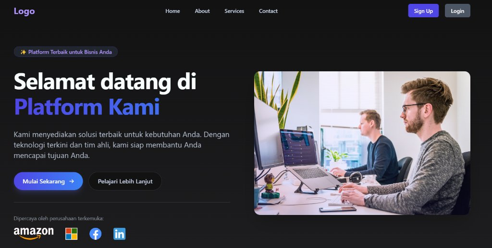

Corporate Platform
Platform Solusi Bisnis Terintegrasi
Aplikasi landing page korporat bertema gelap modern dengan navigasi intuitif, hero section interaktif, call-to-action dinamis, serta integrasi showcase kepercayaan mitra teknologi global seperti Amazon, Microsoft, Facebook, dan LinkedIn.
HTML5 Semantik
CSS3 Flexbox
Responsive Grid
Dark Mode UI